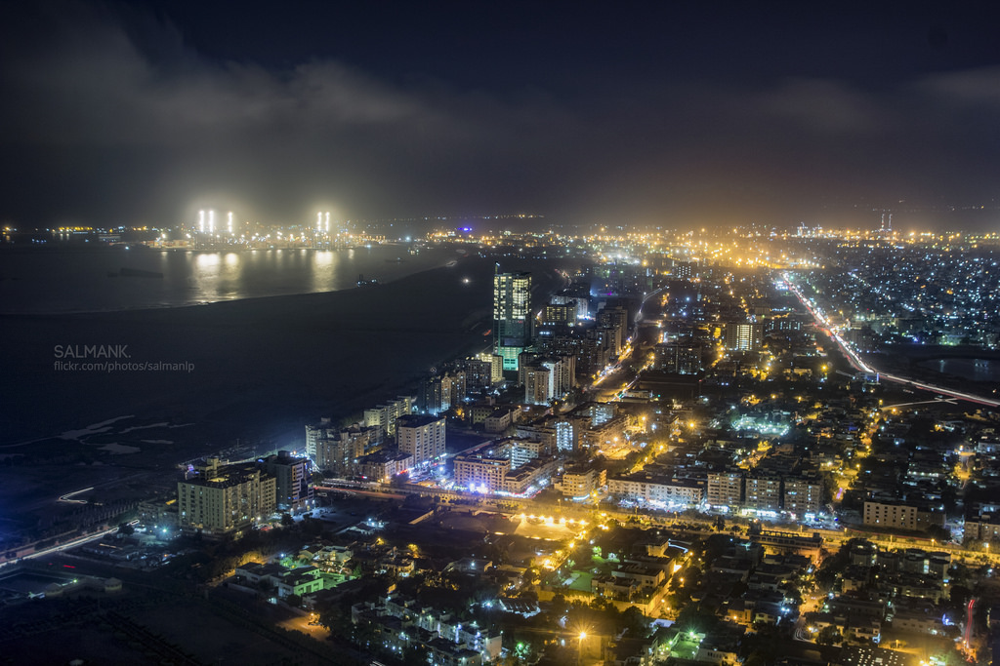

|
Karachi:
|
Karachi is the largest and most populous city in Pakistan. It is located on the southern coast of the country, along the Arabian Sea. As of my knowledge cutoff in September 2021, Karachi had an estimated population of over 16 million people, making it one of the most densely populated cities in the world. Known as the "City of Lights" and the "Financial Capital of Pakistan," Karachi plays a significant role in the country's economy, serving as a major center for finance, industry, trade, and commerce. The city is home to the Karachi Stock Exchange, the country's largest stock exchange. Karachi has a rich cultural and historical heritage. The city has been influenced by various civilizations, including the ancient Greeks, Arabs, Persians, and British. It was an important port city during the British Raj and served as the capital of Pakistan until Islamabad became the capital in 1960. Karachi is renowned for its diverse population, representing people from various ethnic, linguistic, and religious backgrounds. The city's residents include Urdu-speaking Muhajirs, Sindhis, Punjabis, Pashtuns, Balochis, and many other communities. The city offers a vibrant and bustling atmosphere with a mix of modern skyscrapers, colonial-era architecture, and bustling bazaars. It is home to a wide range of educational institutions, cultural centers, shopping malls, and entertainment venues. Karachi also has several notable landmarks and tourist attractions, including the Quaid-e-Azam Mausoleum, Mohatta Palace, Karachi Port Trust Building, Frere Hall, Clifton Beach, and the National Museum of Pakistan. However, it's important to note that Karachi faces various challenges, including traffic congestion, infrastructure issues, and socioeconomic disparities. The city has been working on addressing these challenges and implementing development projects to enhance the quality of life for its residents. |
 |